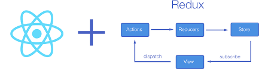

Chương I - 1. IIFE là gì?
- là 1 func duy nhất giống constructor
- được hiểu là (() => {})()
- trước iife thì phải có dấu `;`
- là func private
- sử dụng khi muốn code chạy ngay nhma k ảnh hưởng đến phạm vi bên ngoài (vd để tạo 1 lib)
2. Scope là gì?
- Phạm vi biến: Global, Code Block, Local Scope
3. Khái niệm Closure?
- là 1 hàm có thể ghi nhớ nơi nó được tạo ra & truy cập đc biến ở bên ngoài phạm vi của nó
Chương II - 4. Hoisting là gì??
- Khai báo bằng var, let, const, declaration function đều được hoisting. || Nhưng dòng lệnh Truy cập Biến or Hàm nằm Trên dòng Khai báo thì xảy ra 2 trường hợp:
- Var, Declaration function được gán value là Undefined or NULL => Nên kh có lỗi
- Let, Const không được gán value, mà được đưa vào Temporal Dead Zone (vùng kh truy cập được) => Nên có lỗi xuất hiện
5. Strict mode?
- Khi sử dụng `Strict mode?` giúp báo lỗi or ngăn chặn những doạn mã không an toàn hay dễ gây nhầm lẫn
- Báo lỗi khi gán lại giá trị cho thuộn tinh có `writable: false`
- Báo lỗi khi hàm có tham số cùng tên
- Khai báo hàm trong `code block` thì hàm sẽ thuộc phạm vi của `code block`
- Không đặt tên biến, tên hàm bằng một số từ khóa `nhạy cảm` cảu ngôn ngữ
- Tránh `quên` từ khóa khai báo biến
- Tránh `trùng` tên biến dẫn tới lỗi logic
- Sử dụng bộ nhớ hiệu quả vì tránh tạo biến global
Công dụng
6. Primitive Types & Reference Types?

- Value types: biến sẽ lưu giá trị & ô nhớ riêng biệt vì vậy khi thay đổi sẽ không ảnh hưởng đến nhau
- Reference types: biến sẽ lưu địa chỉ ô nhớ vì vậy khi thay đổi value thì các biến trỏ đến 1 địa chỉ cụ thể
Chương III - 7. Từ khóa "this"?
- Từ khóa `this` trong js đề cập đến đối tượng mà nó thuộc về
- Trong một phương thức, `this` tham chiếu tới đối tượng truy cập phương thức (đối tượng trước dấu .)
- Đứng ngoài phương thức, `this` tham chiếu tới đối tượng `global`
- `this` trong hàm tạo là đại diện cho đối tượng sẽ được tạo
- `this` trong một hàm là `undefined` khi ở `strict mode`
- Với arrow function thì k có `this` vậy nên khi dùng thì `this` sẽ là đối tượng bên ngoài gần nhất
- Các phương thức bind(), call(), apply() có thể tham chiếu `this` tới đối tượng khác
- Phân biệt qua cách hàm/method được gọi. Được gọi qua object.method() thì this là object. Được gọi theo tenHam() thì this là window (strict mode là undefined). Mỗi hàm luôn có context riêng, hàm trong method cũng có context riêng của nó (trừ arrow function).
Lưu ý
Tóm tắt
8. Fn.bind() method - Phần 1
- Phương thức `bind()` sẽ trả về 1 hàm mới
- Có thể nhận các đối số như hàm ban đầu
9. Fn.bind() method - Phần 2
welcome to my store
- Sử dụng arrow func vì k có `Context` vì thế sẽ lấy từ ngoài nên k cần lưu biến `this` (_this=this)
- Delegation PARENT Event Delegation in JavaScript
- closest(): là phương thức của DOM Element giúp kiểm tra Element đó or PARENT Element có chứa class đó hay k?
- data-index => là 1 dataset trong DOM | data-name(đặt tên là gì thì đến lúc) => dataset.name | ở bài này là (Element.dataset.index)
10. Fn.call() method
- Là phương thức trong prototype của Function constructor, phương thức này được dùng để gọi hàm và cũng có thể `bind this` cho hàm
- gọi hàm với `call` method
- gọi hàm và `bind this`, lưu ý trong `strict mode` vẫn có `this` nếu được `bind`
- thể hiện tính kế thừa (extends) trong OOP
- mượn hàm (function borrowing), ví dụ với `arguments`
- `bind()` vs `call()` => `call()` sau khi `bind` xong se goi ham, còn `bind()` chỉ `bind` chứ k gọi hàm
- Fn.call() giúp gọi hàm và bind this tới đối tượng khác, mặc định this là window object
- Fn.call() không trả ra hàm mới, nó gọi luôn hàm sau khi bind this (Fn.bind() thì chỉ bind this nhưng không gọi hàm)
- Fn.call() dùng để mượn hàm - function borrowing
- Fn.call() có thể dùng để kế thừa properties & method từ 1 Constructor khác
11. Fn.apply() method
- Phương thức này cho phép gọi một hàm với một `this` (bind) vàn truyền đối số cho hàm gốc dưới dạng mảng
- - Cú pháp truy cập
function fn(){}fn.bind()fn.call()fn.apply()- - Là các methods được thừa kế từ Function.prototype
function fn(){}fn.bind === Function.prototype.bind //truefn.call === Function.prototype.call //truefn.apply === Function.prototype.apply //truefunction fn(){}- - Các đối số & cách hoạt động
- Bind method
- + trả ra hàm mới với `this` tham chiếu tới `thisArg`
- + không thực hiện gọi hàm
- + nếu được `bind` kèm `arg1, arg2, ...` thì các đối số này được ưu tiên hơn
newFn = fn.bind(thisArg, arg1, arg2, ...)newFn(arg1, arg2, ...)- Call method
- + thực hiện bind `this` với `thisArg` và thực hiện gọi hàm
- + nhận các đối số cho hàm gốc từ `arg1, arg2, ...`
fn.call(thisArg, arg1, arg2, ...)- Apply method
- + thực hiện bind `this` với `thisArg` và thực hiện gọi hàm
- + nhận các đối số cho hàm gốc bằng đối số thứ 2 dưới dạng mảng [`arg1, arg2, ...`]
fn.apply(thisArg, [arg1, arg2, ...])
So sánh: bind, call, apply
Giống nhau
Khác nhau
12. Tìm hiểu về thư viện Redux
- redux data flow diagram

- npm redux (npm redux docs)
- skypack redux (react-redux docs)
-
import reactRedux from 'https://cdn.skypack.dev/redux';
13. Tự code thư viện build UI
- 
- View: thành phần hiển thị giao diện người dùng trên ứng dụng, giao diện UI
- Actions: mô tả hành động (ví dụ: `thêm` thì làm gì? `sửa` thì làm gì? `xóa` thì làm gì?)
- *Khi `View` thực hiện `dispatch` 1 hành động (khi user thực hiện 1 hành động trên view) khi đó `View` trỏ sang `Actions` lấy (mô tả hành động)
- - Ví dụ user click nút `Thêm` thì `dispatch` trỏ sang `actions` và lấy `actions - thêm` lấy đc mô tả `thêm` thì sẽ làm gì? và đẩy sang `reducers`
- Reducers: luôn có giá trị ban đầu (giá trị khởi tạo) và từ lần thứ 2 sử dụng `reducers` thì sẽ nhận giá trị trả về trước đó để làm đối số đầu vào của lần sau sử dụng `reducers`
- * `reducers` nhận mô tả actions (ví dụ `thêm` thì làm gì?) và thực hiện ở bên trong & trả về dữ liệu mới vào `store` (ví dụ thêm 1 bài hát: `reducers` thêm mô tả bài hát và đẩy để lưu vào object store => store(update) => view cũng đc update)
- * Ví dụ thao tác xóa: `View` (user bấm nút xóa) == action xóa (dispatch) ==> Actions (lấy đc mô tả - như là xóa thì làm gì? gỡ bỏ 1 phần tử khỏi mảng) == đẩy sang reducers ==> Reducers (nhận được tín hiệu và phân biệt đc đây là hành động xóa và thực hiện xóa - gỡ 1 phần tử khỏi mảng) == update lại store là mất đi 1 phần tử ==> Store (khi store được update thì sẽ update lại cho View) ==> View (render lại -> re-render và thấy mất 1 phần tử trong mảng)
- Store: lưu trữ các hành động mà `reducers` trả về và update lại và chuyển dữ liệu đó cho `View`
Kiến thức liên quan
- Tagged template literals: (tagFunction) Tìm hiểu về Template Literals trong JavaScript | Template literals (Template strings)
- Destructuring
- Array - Reduce
- Opject Map() => có tính chất lặp qua nó, có thể đặt `key` là bất cứ kiểu dl gì trong js
- Object.assign()
window.dispatch = dispatch: đặt function `dispatch` thành global (có thể sử dụng bất cứ đâu)